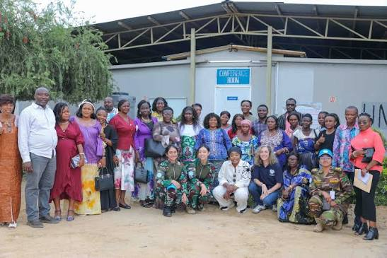

The Government of Ituri
Ituri is a province in the north-east of the Democratic Republic of the Congo, and Bunia is its capital.
The Provincial Government serves the people of Ituri and works to bring the administration closer to every community, with clear information on public services, projects and activities.
Our priorities

🕊️ Peace
Protecting communities and promoting a peaceful Ituri.

🏗️ Development
Projects in health, roads and public infrastructure.

Well-being
Public services for every community in the province.
Territories of Ituri

Aru
Aru is known for its agricultural activities, local trade and cultural diversity.

Djugu
Djugu is an important territory with farming communities and valuable natural resources.

Irumu
Irumu has important agricultural activities, trading centres and natural resources.

Mahagi
Mahagi is located near Lake Albert and is known for fishing, agriculture and cross-border trade.

Mambasa
Mambasa is rich in forests, biodiversity and natural resources, offering opportunities for development.